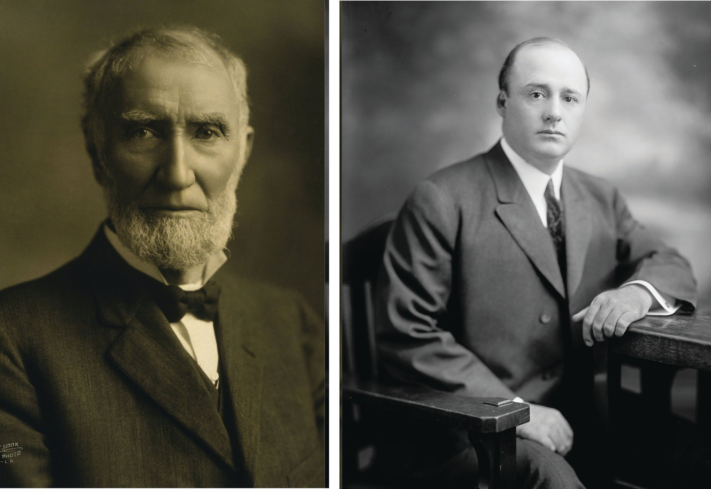
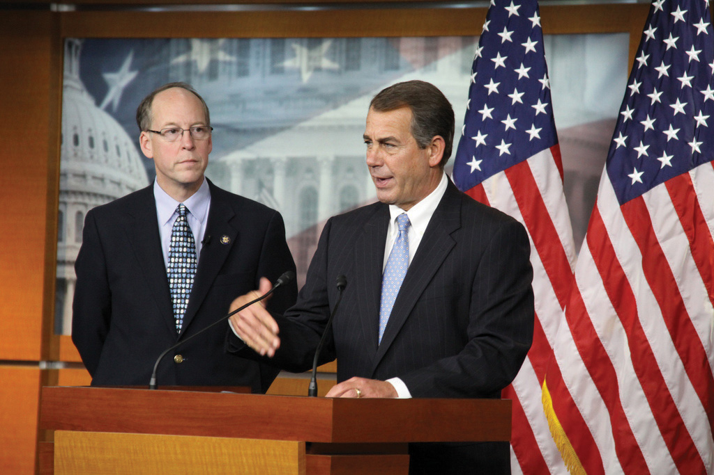
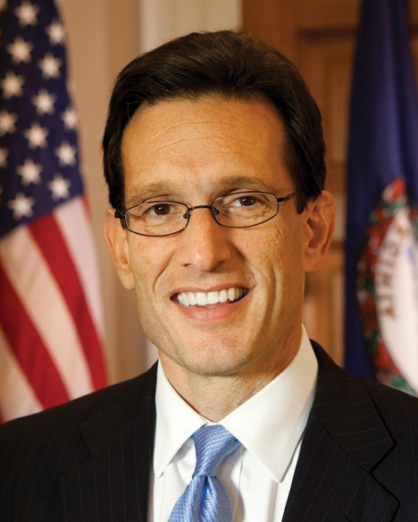
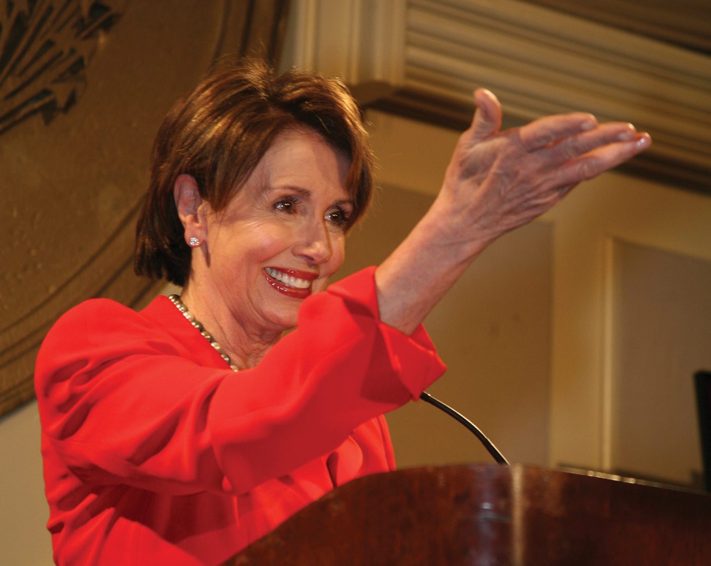

After reading this section, you should be able to answer the following questions:
The House leadership consists of the Speaker, floor leadersLeaders from each party who coordinate legislative initiatives., and whipsMembers who promote party unity in voting.. Committee chairs also are part of the House leadership, and they will be discussed in Section 12.6 "Committees", which is about committees. The rules of the House give extensive power to leaders to direct the legislative process.
House members consider a number of factors when choosing leaders. A member’s personal reputation, interactions with other members, legislative skills, expertise, experience, length of service, and knowledge of the institution are taken into account. Members tend to choose leaders who are in the ideological mainstream of their party and represent diverse regions of the country. The positions that a member has held in Congress, such as service on important committees, are evaluated. Fundraising ability, media prowess, and communications skills are increasingly important criteria for leadership. The ability to forge winning coalitions and the connections that a member has to leaders in the Senate or the executive branch are factored into the decision.Robert L. Peabody, Leadership in Congress (Boston: Little, Brown, 1976).
Holding a congressional leadership position is challenging, especially as most members think of themselves as leaders rather than followers. Revolts can occur when members feel leaders are wielding too much power or promoting personal agendas at the expense of institutional goals. At times, a leader’s style or personality may rub members the wrong way and contribute to their being ousted from office.Joseph Cooper and David W. Brady, “Institutional Context and Leadership Style: The House from Cannon to Rayburn,” American Political Science Review 75, no. 2 (June 1981): 411–25.
The Speaker of the HouseThe top-ranking member and presiding officer of the House of Representatives. is at the top of the leadership hierarchy. The Speaker is second in succession to the presidency and is the only officer of the House mentioned specifically in the Constitution. The Speaker’s official duties include referring bills to committees, appointing members to select and conference committees, counting and announcing all votes on legislation, and signing all bills passed by the House. He rarely participates in floor debates or votes on bills. The Speaker also is the leader of his or her political party in the House. In this capacity, the Speaker oversees the party’s committee assignments, sets the agenda of activities in the House, and bestows rewards on faithful party members, such as committee leadership positions.Thomas P. Carr, “Party Leaders in the House: Election, Duties, and Responsibilities,” CRS Report for Congress, October 5, 2001, order code RS20881.
In addition to these formal responsibilities, the Speaker has significant power to control the legislative agenda in the House. The Rules Committee, through which all bills must pass, functions as an arm of the Speaker. The Speaker appoints members of the Rules Committee who can be relied on to do his or her bidding. He or she exercises control over which bills make it to the floor for consideration and the procedures that will be followed during debate. Special rules, such as setting limits on amendments or establishing complex time allocations for debate, can influence the contents of a bill and help or hinder its passage.Nicol C. Rae and Colton C. Campbell, eds. New Majority or Old Minority? (Lanham, MD: Rowman & Littlefield, 1999).
Speakers’ personal styles have influenced the evolution of the position. Speaker Joe Cannon (R-IL) became the most powerful Speaker of the House by using strong-arm tactics to control members of both parties. “Czar” Cannon’s style so angered his colleagues that he was forced to step down as chairman of the Rules Committee during the St. Patrick’s Day Revolt of 1910, which stripped him of his ability to control appointments and legislation. The position lost prestige and power until Speaker Sam Rayburn (D-TX) took office in 1940. Rayburn was able to use his popularity and political acumen to reestablish the Speakership as a powerful position.Ronald M. Peters, Jr., The American Speakership (Baltimore: Johns Hopkins University Press, 1997).
Figure 12.5
Strong Speakers of the House, such as Joe Cannon (left) and Sam Rayburn (right), were able to exert influence over other members. Strong speakers are no longer prominent in the House.
Source: Photo (left) courtesy of Hartsook Photo, http://en.wikipedia.org/wiki/File:JGCannon.jpg. Photo (right) courtesy of and Harris & Ewing, Inc., http://commons.wikimedia.org/wiki/File:Sam_Rayburn3.jpg.
A Speaker’s personal style can influence the amount of media coverage the position commands. The Speaker can become the public face of the House by appearing frequently in the press. A charismatic speaker can rival the president in grabbing media attention and setting the nation’s issue agenda. On April 7, 1995, Speaker Newt Gingrich (R-GA) made an unprecedented prime-time television “State of the Congress” address on CBS indicating that the House has passed the Contract With America, a plan that proposed extensive changes to the social welfare system and tax policy. Despite the fact that the Contract with America died in the Senate, Gingrich became a “multimedia Whirling Dervish of books, writings, lectures, tapes, and television, spewing out ideas.”Dan Balz and Ronald Brownstein, Storming the Gates (Boston: Little Brown, 1996), 143. He was a constant presence on the television and radio talk show circuit, which kept attention focused on his party’s issue platform. This strategy worked at the outset, as the Republicans were able to push through some of their proposals. Gingrich’s aggressive personal style and media blitz eventually backfired by alienating members of both parties. This experience illustrates that the media can have a boomerang effect—publicity can make a political leader and just as quickly can bring him down.
In contrast, Speaker Dennis Hastert (R-IL), who took office in 1999, exhibited an accommodating leadership style and was considered a “nice guy” by most members. He worked behind the scenes to build coalitions and achieve his policy initiatives. After the election of President George W. Bush, Hastert coordinated a communications strategy with the executive branch to promote a Republican policy agenda. He shared the media spotlight, which other members appreciated. His cooperative approach was effective in getting important budget legislation passed.Roger H. Davidson and Walter J. Oleszek, Congress and Its Members, 8th ed. (Washington, DC: CQ Press, 2002).
Figure 12.6
Republican John Boehner of Ohio became Speaker of the House after the Republicans took control following the 2010 elections. He replaced Democrat Nancy Pelosi, the first woman Speaker.
Source: Photo courtesy of the House GOP Leader, http://www.flickr.com/photos/gopleader/4331119670/.
Speaker Nancy Pelosi (D-CA) was the first woman Speaker of the House, serving from 2006 to 2010. Media coverage of Pelosi frequently included references to her gender, clothing, emotions, and personal style. Pelosi’s choice of Armani suits was much noted in the press following her selection. Syndicated New York Times columnist Maureen Dowd wrote a piece on November 6, 2006, titled “Squeaker of the House.” Dowd alleged that Pelosi’s first act after becoming Speaker was to “throw like a girl” and that she was “making her first move based on relationships and past slights rather than strategy.” “Squeaker of the House” became a moniker that stuck with Pelosi throughout her tenure as Speaker and was the subject of a YouTube parody. Pelosi was replaced by Rep. John Boehner (R-OH) when the Republicans took control of the House following the 2010 midterm elections.
The Republicans and Democrats elect floor leaders who coordinate legislative initiatives and serve as the chief spokespersons for their parties on the House floor. These positions are held by experienced legislators who have earned the respect of their colleagues. Floor leaders actively work at attracting media coverage to promote their party’s agenda. The leadership offices all have their own press secretaries.
The House majority leaderSecond in the majority party hierarchy, the majority leader works with the Speaker of the House to set the legislative agenda, coordinate committee activity, and schedule legislation for consideration. is second to the Speaker in the majority party hierarchy. Working with the Speaker, he is responsible for setting the annual legislative agenda, scheduling legislation for consideration, and coordinating committee activity. He operates behind the scenes to ensure that the party gets the votes it needs to pass legislation. He consults with members and urges them to support the majority party and works with congressional leaders and the president, when the two are of the same party, to build coalitions. The majority leader monitors the floor carefully when bills are debated to keep his party members abreast of any key developments.Richard C. Sachs, “Leadership in the U.S. House of Representatives,” CRS Report for Congress, September 19, 1996, order code 96-784GOV.
Figure 12.7
Rep. Eric Cantor (R-VA) became House Majority Leader following the 2010 midterm elections. Cantor’s web page features multiple means of reaching out to citizens, including links to Facebook and a TwitterBuzz feed.
Source: Photo courtesy of the US Congress, http://commons.wikimedia.org/wiki/File:Eric_Cantor,_official _portrait,_112th_Congress.jpg.
The House minority leaderThe head of the party with the fewest members in the House who conveys the minority party’s positions on issues and courts the press. is the party with the fewest members’ nominee for Speaker. She is the head of her party in the House and receives significant media coverage. She articulates the minority party’s policies and rallies members to court the media and publicly take on the policies of the majority party. She devises tactics that will place the minority party in the best position for influencing legislation by developing alternatives to legislative proposals supported by the majority. During periods of divided government, when the president is a member of the minority party, the minority leader serves as the president’s chief spokesperson in the House.Thomas P. Carr, “Party Leaders in the House: Election, Duties, and Responsibilities,” CRS Report for Congress, October 5, 2001, order code RS20881.
Figure 12.8
Rep. Nancy Pelosi (D-CA) became House Minority Leader after she was replaced as Speaker of the House by Republican Rep. John Boehner (R-OH) following the 2010 midterm elections. Pelosi’s website does not mention her status as minority leader.
Members of Congress from the Republican and Democratic parties elect whips who are responsible for encouraging party loyalty and discipline in the House. Aided by extensive networks of deputies and assistants, whips make sure that the lines of communication between leaders and members remain open. In 2002, whip Steny Hoyer (D-MD) greatly expanded his organization to include forty senior whips and thirty assistant whips to enforce a “strategy of inclusion,” which gives more members the opportunity to work closely with party leaders and become vested in party decisions. This strategy made more party leaders with expertise available to the press in the hopes of increasing coverage of the Democratic Party’s positions. Whips keep track of members’ voting intentions on key bills and try persuade wayward members to toe the party line.Roger H. Davidson and Walter J. Oleszek, Congress and Its Members, 8th ed. (Washington, DC: CQ Press, 2002).
An extensive leadership structure provides an organizational framework that helps House members work effectively if not efficiently. At the top of the leadership hierarchy is the Speaker of the House, who is the body’s presiding officer. Majority and minority leaders help set their party’s agenda on issues. The whips encourage party unity on House votes.